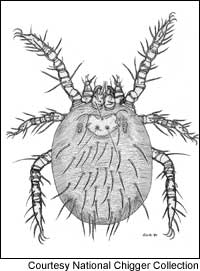

Give Chiggers The Brush
Avoid these red bugs and take the itch out of summer.
By Sherri Deatherage Green
June/July 2005
It’s summer again, the season when chiggers make cowards of us all. Wouldn’t it be great to skip through fields of wildflowers and roll around in cool grass like the people in allergy medicine commercials do? Anyone that reckless either doesn’t get out much or is too young to know better. Call the rest of us “once bitten, twice shy” because meadows and lush grass often are guarded by chiggers - tiny “red bugs” that leave small and terribly itchy wounds on human hosts in the most delicate and unmentionable places.
Ounce for ounce, the almost-microscopic chigger may cause more irritation than any other critter. Yet contrary to popular belief, chiggers don’t suck blood or burrow under the skin. They eat skin cells, which they dissolve with digestive enzymes. The human immune system defends bitten areas by forming a hard wall of cells, called a stylostome. Conveniently for the chigger, these stylostomes double as strawlike feeding tubes. And there’s the rub - and the scratch - it’s your own immune system’s response that causes the intense itching.
Undercover Chiggers
Chiggers are not true insects - they actually are immature mites - though they do scamper around on six legs in their troublesome larval stage. Like their parasitic tick cousins, chigger larvae attach themselves to hosts to feed by inserting minute mouthparts into skin, usually at hair follicles. Chiggers are found worldwide. In the United States, they are most common in the Southeast and Midwest because they thrive in humid weather amid thick vegetation.
Science seldom turns its microscope on chiggers because, as annoying as they may be, chiggers don’t destroy crops or otherwise cause catastrophes worthy of big research bucks. But the U.S. Army considers chiggers enemies well worth studying. Servicemen in World War II never knew they had been bitten until they came down with scrub typhus, a disease covertly spread by tropical Asian chiggers that causes fever, headaches and swollen lymph glands. Bill Wildman, an environmental health officer at Irwin Army Community Hospital in Fort Riley, Kan., notes the species found in North America do not spread diseases.
Humans are accidental victims of chiggers because most of these mites evolved to feed on reptiles and birds, says M. Lee Goff, curator of the National Chigger Collection, housed at the University of Hawaii at Manoa. He and his predecessors have accumulated about 25,000 specimens representing 1,800 identified chigger species. Goff, who also is the forensics science program chairman at Chaminade University in Hawaii, says chigger species in Southeast Asia evolved to feed on mammals and can spread disease because the human immune system does not reject their enzymes and the chigger bites don’t itch.
Goff may be one of the few humans on the planet to admit affection for the pests. “They are actually very attractive little mites. They have a velvety appearance,” he says. But chiggers in a lab are much safer than chiggers around your child’s swing. Fortunately, you can do several things to take much of the chigger itch out of summer.
Chigger Controls
Begin by avoiding shady areas of tall grass and brush, and regularly mow areas where children play. Short grass gives chiggers fewer hiding places at midday. “They are really not very hardy and can’t take much sunlight,” Wildman says.
In other parts of your property, chiggers are likely present in large numbers in some spots, while places only 10 feet away may be chigger-free. So, one person in a berry-picking party may suffer multiple bites while another remains untouched. This is because female chiggers, which begin hatching from overwintered eggs when temperatures rise above 60 degrees, lay eggs in clusters, and hatchlings don’t stray far from each other. Thousands may wait patiently in leaves and grass until a mouse, lizard or errant human walks past. Then, attracted by the carbon dioxide the animal exhales, the chigger larvae quickly scurry to find a place to feed. On a warm day, they can make it from your shoe to your waistband in only 15 minutes.
This clustering - and the fact that long, humid summers can produce three generations of chiggers - makes broadcasting insecticides ineffective. Plus, many chemicals once used to control chiggers have been banned from home use, Goff says.
Some chigger fighters identify “hot spots” by propping up squares of black cardboard vertically around their yards. If the mites are nearby, they will crawl to the top of the cardboard and can be seen with a magnifying glass. Setting out a chunk of dry ice on a white sheet also will attract chiggers because they are drawn to carbon dioxide.
The problem with both approaches, however, is that they attract other kinds of mites as well. The ones you find may not be chiggers. Besides, anyone who gets close enough to watch them probably will be itching soon.
Stinky stuff keeps chiggers away. The Karankawa tribe knew this. That’s why these Gulf Coast dwellers slathered themselves with alligator grease. A smelly-but-dry modern alternative is sulphur powder (available at pharmacies); it’s an effective repellent for people who aren’t bothered by the odor. Just shake your socks in a plastic bag with a tablespoon of the powder before going outside. Those more accepting of chemical methods may choose over-the-counter repellents containing diethyltoluamide (DEET) as a less pungent repellent.
Experts recommend wearing long sleeves and tall boots, and stuffing your pants into your socks when venturing into chigger territory. Then, shower and wash your clothes as soon as you can. Some chiggers wander about for hours before finding a place to feed, so you often have time to wash them off. If it’s too hot to dress defensively, stop every half hour or so and vigorously rub your skin, including those soft, tender spots that chiggers love (waistband and underarms). Chiggers brush off rather easily, but because they are too small to cause a tickle, it’s important to rub yourself down before you start itching.
When the itching starts, the parasites often are long gone, and we’re left with bright red bumps that drive us crazy for as long as two or three weeks. Antihistamines, hydrocortisone creams and cool compresses will help provide relief. Benadryl, a topical antihistamine, comes in gel, cream, spray and “itch stick” form. A dab of fingernail polish may remind you not to scratch, but it does nothing to cure the itch.
When the six-legged larvae are done feeding (this can take from one to several days), they drop off the hosts and transform into eight-legged nymphs, which mature to the adult stage. Adult chiggers prefer eggs of springtails, isopods and mosquitoes to humans and animals.
Chigger Trivia a good reason to party
For more than a decade, the city of Cooper, Texas, has been hosting a Chigger Festival on the third weekend of October to celebrate the end of chigger season.
The itch becomes the snitch
Besides giving the residents of Cooper a reason to party, chiggers also proved useful to humans when they helped police in Thousand Oaks, Calif., solve a murder more than 20 years ago. Nearly all the investigators and rescue workers who found the victim came home with chigger bites. When the distinctive red bumps appeared on one of the suspects, authorities knew they had their man. Like rain, chiggers aren’t all that common in Southern California.
|
 COURTESY NATIONAL CHIGGER COLLECTION Don't let these nasty little bugs make you a prisoner in your home. |
 Dressing like a geek - wearing long sleeves and stuffing your pants into your socks - can help you avoid chigger bites. |
|